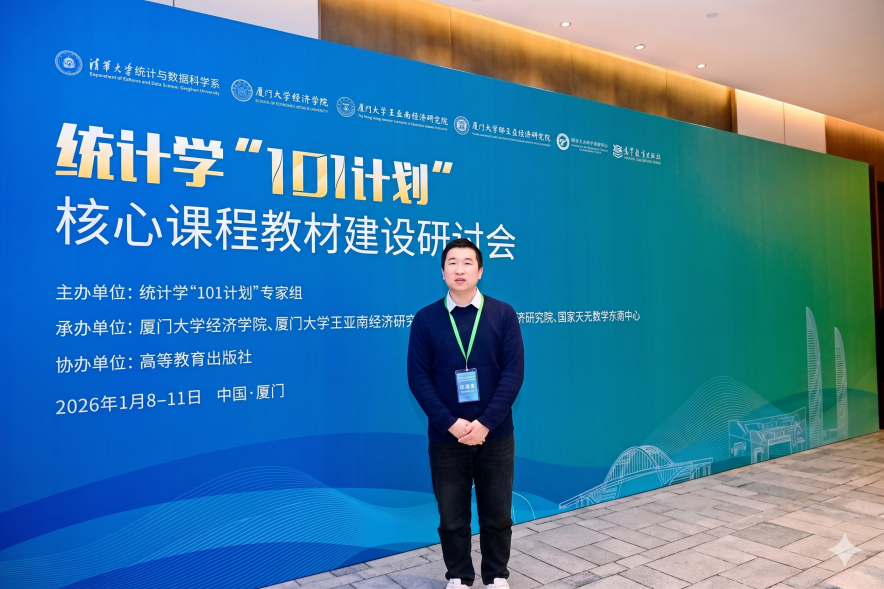

Jiandong Zhang, College of Mathematics and Statistics, Northwest Normal University
张建东, 西北师范大学数学与统计学院
Biography（个人简介）
张建东，男，汉族，1993年生，西北师范大学数学与统计学院副教授，硕士研究生导师，Mathematical Reviews评论员，师从颜荣芳教授获概率论与数理统计专业理学博士学位，
现为中国现场统计研究会贝叶斯统计分会理事、中国现场统计研究会可靠性工程分会理事、中国优选法统筹法与经济数学研究会数据科学分会理事。
研究方向为可靠性与数据科学的统计理论与方法研究，主要从事随机序、贝叶斯理论与统计机器学习、人工智能的统计基础等内容的研究。
近年来在Naval Research Logistics(T2)、TEST(T2)、Journal of Applied Probability(T3)、Reliability Engineering & System Safety(T2)、
Journal of Risk and Reliability(T2)、Communications in Statistics-Theory and Methods(T3)、Statistical Theory and Related Field(T3)、
Journal of Computational and Applied Mathematics(T3)、Applied Mathematical Modelling(T2)、ICCK Transactions on Systems Safety and Reliability、
应用概率统计(T3)等国内外权威期刊发表论文。主持国家自然科学基金天元数学基金1项，省科技厅青年科技基金1项，省教育厅高校教师创新基金1项，
参与国家自然科学面上和地区基金4项，获甘肃省自然科学奖三等奖1项。指导学生获全国大学生统计建模大赛国家一等奖1项、中国研究生数学建模竞赛国家二等奖1项、
全国应用统计专业学位研究生案例大赛全国三等奖1项和赛区奖多项。
Teaching（教学工作）
主要承担的课程有《概率论与数理统计》、《多元统计分析》、《统计预测与决策》、《回归分析》、《数据科学导论》、《随机过程》、《高等数学》和《线性代数》等。
Research（科研项目）
- 国家自然科学基金数学天元基金项目(12526628)，202601-202712, 主持.
- 省科技厅青年科技基金项目(24JRRA144)，202408-202607，主持.
- 省教育厅高校教师创新项目(2023A-002)，202405-202604，主持.
- 国家自然科学基金地区项目(12361060)，202401-202712，参与.
- 国家自然科学基金地区项目(12061065)，202101-202412，参与.
- 国家自然科学基金地区项目(11861058)，201901-202212，参与.
- 国家自然科学基金面上项目(71471148)，201501-201812，参与.
- 省科技厅自然科学基金项目(21JR7RA135)，202109-202308，参与.
- 省教育厅产业支撑计划项目(2025CYZC-016)，202501-202612，参与.
Honors & Awards（荣誉&奖励）
- 2025年获甘肃省自然科学三等奖.
- 2024年西北师范大学数学与统计学院优秀班主任.
- 2023年全国大学生统计建模大赛优秀指导教师奖，中国统计教育学会.
- 2022年中国优选法统筹法与经济数学研究会工业工程分会学术交流暨学会年会最佳论文奖, 中国优选法统筹法与经济数学研究会工业工程分会.
- 2022年清华大学质量与可靠性研究院年会最佳理论论文入围奖, 清华大学工业工程系.
- 2021年中国现场统计研究会全国统计学博士研究生学术论坛论文二等奖.
- 2021年华为杯第十八届中国研究生数学建模竞赛三等奖.
- 2021年西北师范大学研究生“学术之星”.
Publications（部分论文）
- Zhang Jiandong, Zhang Yiying, and Zhao Peng(2026). Reliability analysis of randomly weighted k-out-of-n systems under dynamic random shocks. Reliability Engineering & System Safety, 275, 112790,T2.
- Zhao Huanhuan, Zhao Xiaole, Wen Xueyi, Yan Rongfang, and Zhang Jiandong(2026). Slope Stability and Safety Assessment Based on Random Forest Enhanced under Multi-Strategy Pelican Optimization. ICCK Transactions on Systems Safety and Reliability, 2(2), 82-100.
- 宋海涛, 张建东, 颜荣芳(2026). 位置尺度样本构成极值顺序统计量的扩散序和星序, 应用概率统计, 42(2) : 193-207 ,T3.
- Lv Guoqiang, Yan Rongfang, and Zhang Jiandong(2026). Usual stochastic orderings of the second smallest order statistics with dependent demi-parametric distribution random variables. Communications in Statistics-Theory and Methods, 55 (9):2853–2876,T3.
- Niu Jiale, Yan Rongfang, and Zhang Jiandong(2025). Preventive replacement policies of parallel/series systems with dependent components under deviation costs. Reliability Engineering & System Safety, 260, 111033,T2.
- Guo Man-Yuan, Zhang Jiandong, Zhang Yiying, and Zhao Peng(2024). Optimal redundancy allocations for series systems under hierarchical dependence structures. Quality and Reliability Engineering International, 40(4):1540-1565.
- Zhang Jiandong, Guo Zhouxia, Niu Jiale, and Yan Rongfang(2024). Increasing convex order of capital allocation with dependent assets under threshold model. Statistical Theory and Related Fields, 8 (2):124-135, T3.
- Guo Man-Yuan, Zhang Jiandong, Yan Rongfang(2024). Stochastic comparisons of second largest order statistics with dependent heterogeneous random variables. Communications in Statistics-Theory and Methods, 54 (12):3443-3461, T3.
- Zhang Jiandong, and Zhang Yiying(2023). Stochastic comparisons of relevation allocation policies in coherent systems. Test, 32 (3):865-907, T2.
- Zhang Jiandong, Yan Rongfang, and Zhang Yiying(2023). Reliability analysis of fail-safe systems with heterogeneous and dependent components subject to random shocks. Proceedings of the Institution of Mechanical Engineers, Part O: Journal of Risk and Reliability, 237 (6):1073-1087, T2 .
- Zhang Jiandong, Yan Rongfang, and Zhang Yiying(2023). Stochastic comparisons of largest claim amount from heterogeneous and dependent insurance portfolios. Journal of Computational and Applied Mathematics, 431:115265, T3.
- Lu Bin, Zhang Jiandong, and Yan Rongfang(2023). Optimal allocation of a coherent system with statistical dependent subsystems. Probability in the Engineering and Informational Sciences, 37(1):29-48.
- Zhang Jiandong, and Zhang Yiying(2022). A copula based approach on optimal allocation of hot standbys in series systems. Naval Research Logistics (NRL), 69 (6):902-913, T2.
- Zhang Jiandong, Yan Rongfang, and Wang Junrui(2022). Reliability optimization of parallel-series and series-parallel systems with statistically dependent components. Applied Mathematical Modelling, 102:618-639, T2.
- Guo Zhouxia, Zhang Jiandong, and Yan Rongfang (2022). On inactivity times of failed components of coherent system under double monitoring. Probability in the Engineering and Informational Sciences, 36(3):923-940.
- Yan Rongfang, Zhang Jiandong, and Zhang Yiying (2021). Optimal allocation of relevations in coherent systems. Journal of Applied Probability, 58 (4):1152-1169, T3.
Students（团队获奖）
- 王文琦、苏羿芯、毕建龙, 2023年全国大学生统计建模大赛, 国家本科生组一等奖, 中国统计教育学会.
- 张莉、刘煜熔、雒焕, 2023年中国研究生数学建模竞赛, 国家二等奖, 中国学位与研究生教育学会, 中国科协青少年科技中心.
- 赵欢欢、温雪怡、赵晓乐，2025年中国研究生数学建模竞赛, 全国三等奖，中国学位与研究生教育学会, 中国科协青少年科技中心.
- 张园园、韩梦瑶、白晶，2025年中国研究生数学建模竞赛, 全国三等奖，中国学位与研究生教育学会, 中国科协青少年科技中心.
- 赵欢欢、燕一平、赵晓乐，2025年全国应用统计专业研究生案例大赛，全国三等奖，中国统计教育学会高等教育分会.
- 陈明阳、谭婷婷、潘艺、宋晓婷、王玥，2025年“正大杯”全国大学生市场调查与分析大赛, 全国三等奖，中国商业统计学会.
- 郭萍、和茜、孔雪雪、宋海源、李娜，2025年大学生数据要素素质大赛，全国三等奖，全国数据工程教学联盟.
- 苏羿芯、王文琦、毕建龙, 2023年国际大学生数学建模竞赛, Successful Participant奖, 国际工业与应用数学学会.
- 唐双玲、刘乐、张馨化、闫积慧、李志丹，2024年国家级大学生创新创业训练计划(202410736005), 教育部高等教育司.
- 王弘扬、王文琦、苏羿芯、宋海涛，2023年国家级大学生创新创业训练计划(202310736007), 教育部高等教育司.
Enrollment（招生信息）
- 课题组致力于可靠性与数据科学的统计理论与方法研究，诚邀有志于学术、追求卓越的优秀学子加入。
- 招生专业：统计学（学术硕士）、应用统计（专业硕士）。
- 研究方向：可靠性与数据科学、统计机器学习。
- 招生要求：为人踏实，做事认真，勤勉刻苦，求真务实，对科学研究抱有真诚的热爱。特别提醒：若仅以混学位为目的，请勿联系。
- 申请材料：请将以下材料发送至邮箱，个人简历（必选）、本科成绩单、英语四/六级成绩单，以及其他能够证明自身能力的材料（后三项可选）。
- 地址：甘肃省安宁区安宁东路967号西北师大致勤楼A区1601-1
- 邮箱： jdzhang[at] nwnu [dot] edu [dot] cn